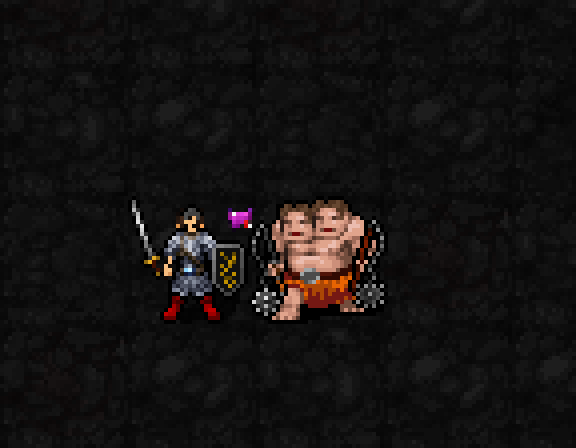
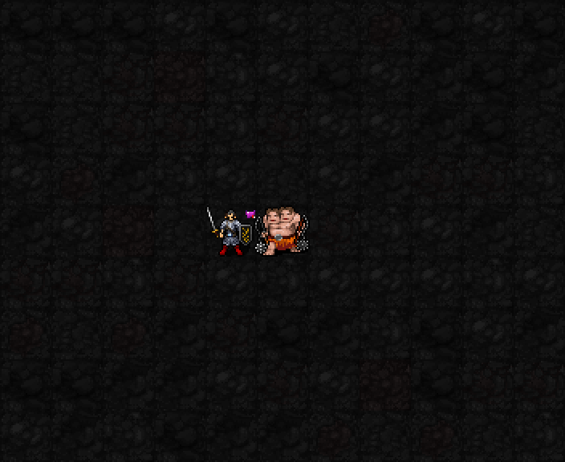
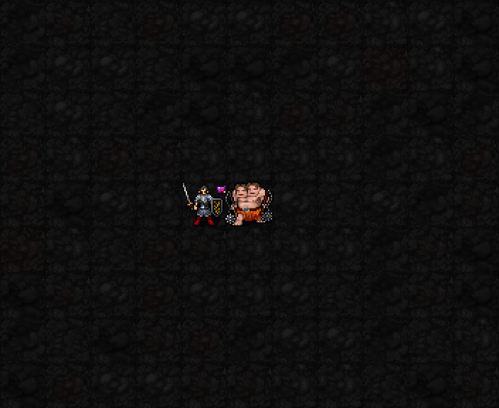

빈 테두리를 속이 찬 분홍 하트로 바꾸고, 기존보다 게임 픽셀 6칸 위로 올렸습니다. 우측 위치와 중첩별 크기 변화는 유지하며 대상 머리 윗부분에 하트 아래쪽만 살짝 걸칩니다. 최종 승인 전 수정안입니다.
표식 없음 → 실제 공격으로 유혹 1~5중첩 → 바로 위 몬스터가 있는 경우. 원본 SDL 캡처를 최근접 확대했으며 이펙트를 덧그리지 않았습니다.



22신 통합 미리보기 · 초코로 돌아가기